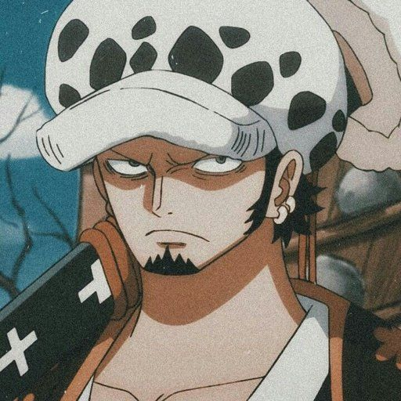

Mugiwara no Luffy
Monkey D. Luffy
- The one who is going to be the King of Pirates
- The captain of the Straw Hats Pirates
- Called as the 5 emperor of the seas
- The son of the most wanted person in One Piece Monkey D. Dragon and Grandaon of Monkey D. Garp
- His favorite food is meat
- His Devil Fruit is The Gomu-Gomu No Mi

Pirate Hunter
Roronoa Zoro
- Best Swordsman
- The right arm of Luffy
- Second strongest member of the Muguiwara No Icimi
- The only one who can control enmma power right now
- One eye Samurai
- Train By The greatest SwordsMan alive MiHawk

The surgeon of death
Trafalgar D. Law
- He have the most expensive Devil fruit in One Piece
- The best Doctor u can have in you're crew
- The name of his Devil Fruit is Ope-Ope No Mi
- The only person that can give u imortality
- Is one of the 7 warlods of the sea
- Is a member of the "D" clan
Mr.Prince
Sanji
- He have the third highest bounty in the crew after luffy and jimbei
- Is part of the Germa Family
- Best chef in all one piece
- He doens't have any devil fruit but he can put his legs on extremely hot fire
- He has one of the rarest blood types of all
- And he is a gentlemen with the ladies